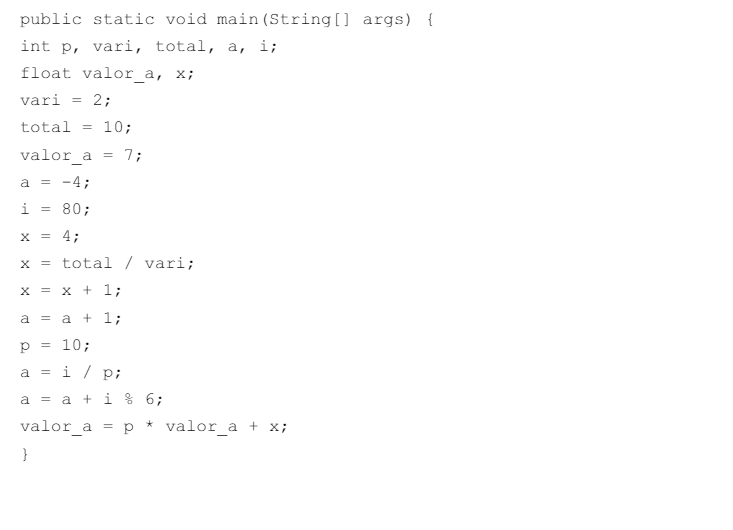

MINISTÉRIO DA EDUCAÇÃO
SECRETARIA DE EDUCAÇÃO PROFISSIONAL E TECNOLÓGICA
INSTITUTO FEDERAL DE EDUCAÇÃO, CIÊNCIA E TECNOLOGIA DE SANTA CATARINA
CÂMPUS LAGES
CURSO CIÊNCIA DA COMPUTAÇÃO
COMPUTAÇÃO E SOCIEDADE
LISTA DE EXERCÍCIOS
Aluno:
Vinícius Souza Corbelllini
Data:
26/06/2024
Lista de Exercícios sobre operadores e expressões
Download da resposta dos Exercícios compactada em um arquivo .zip
1) Calcule os resultados das seguintes expressões:
- 5 + 3 * 6 / 2
- 36 / 3 * 2 – 5 +8
- 30 / 4 * 6
- 30 % 4 * 6
- 5 * 7 % 3 + 4 / 2 + 5
- (5 * 7 % 3 + 4) / 2 + 5
- (5 * 7 % 3) + 4 / 2 + 5
Resposta: Exercício 1
2) Monte a tabela do teste de mesa para o programa abaixo.

Resposta: Exercício 2
3) Faça um programa que leia dois números, calcule e apresente a soma dos quadrados
destes números.
Resposta: Exercício 3
4) Faça um programa que leia dois números, calcule e apresente o quadrado da soma
destes números.
Resposta: Exercício 4
5) Crie um programa que leia as medidas da base e altura de um retângulo, calcule e
apresente a área e o perímetro deste retângulo.
Resposta: Exercício 5
6) Escreva um programa que leia a temperatura em graus Celsius e apresente a
temperatura correspondente em graus Fahrenheit, usando a fórmula abaixo.
Resposta: Exercício 6
7) Uma sorveteria vende três tipos de picolés. Sabendo-se que o picolé tipo 1 é vendido
por R$ 1,50, o do tipo 2 por R$ 2,00 e o do tipo 3 por R$ 0,75, faça um programa que leia
a quantidade vendida de cada tipo de picolé e apresente o valor arrecadado com as
vendas de cada tipo de picolé e o valor total das vendas.
Resposta: Exercício 7
8) Uma revendedora de carros paga a seus vendedores um salário fixo equivalente a dois
salários-mínimos, mais uma comissão de R$ 150,00 por carro vendido e mais uma
comissão de 5% do valor das vendas. Crie um programa que leia o valor do saláriomínimo, quantos carros o
vendedor vendeu ao longo do mês e o valor total das vendas.
Após ler os dados, o programa deve calcular e apresentar o valor do salário do
funcionário.
Resposta: Exercício 8
9) Uma pessoa foi ao supermercado e comprou:
- Q quilos de café, cujo custo unitário é X;
- L litros de leite, cujo custo unitário é Y;
- B pacotes de bolacha, cujo custo unitário é Z.
Resposta: Exercício 9
10) Faça um programa que leia um número inteiro e apresente o quociente e o resto da
divisão deste número por 2.
Resposta: Exercício 10
11) (DESAFIO) Crie um programa que leia um número inteiro que representa a
quantidade de segundos de um vídeo. O programa deve calcular e apresentar quantas
horas, minutos e segundos dura este vídeo.
Resposta: Exercício 11
12) Um restaurante a quilo cobra R$39,00 por quilo de refeição. Escreva um programa
que leia o peso do prato montado pelo cliente (em quilos) e imprima o valor a pagar. Obs.
O prato vazio pesa 450 gramas.
Resposta: Exercício 12
13) Escreva um programa que receba um horário (horas, minutos e segundos) e
determine quantos segundos já se passaram desde que o dia começou.
Resposta: Exercício 13
14) Escreva um programa que receba um horário (horas, minutos e segundos) e
determine quantos segundos ainda faltam para terminar o dia (considere o dia com 24
horas).
Resposta: Exercício 14
15) Faça um programa que receba o peso de uma pessoa, calcule e apresente:
- o novo peso se a pessoa engordar 15% sobre o peso digitado;
- o novo peso se a pessoa emagrecer 20% sobre o peso digitado.
Resposta: Exercício 15
16) João recebeu seu salário de R$ 1500,00 e precisa pagar duas contas (C1=R$ 200,00
e C2=R$120,00). Como as contas estão atrasadas, João terá de pagar multa de 2% sobre
cada conta. Faça um programa que calcule e mostre quanto restará do salário do João.
Resposta: Exercício 16